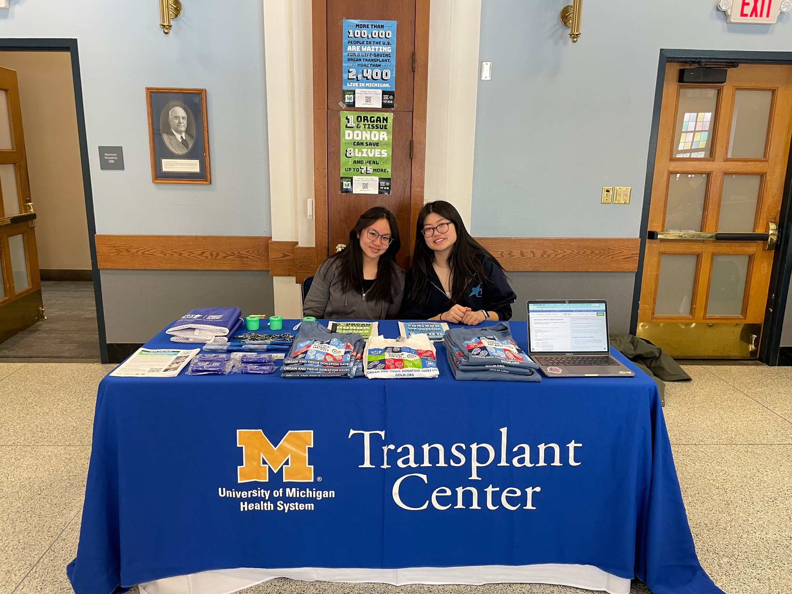

Outreach
Educate students and community members about organ donation, address common misconceptions, give high-school presentations, and table on campus to encourage donor registration.
Organ Transplant & Health Awareness
Educating students, supporting transplant awareness, and building a community committed to the gift of life.
About Us
OTHA is a student-led organization at the University of Michigan dedicated to spreading awareness about organ donation, promoting organ health, and supporting families affected by organ health issues.
Our mission is to engage the campus and wider community in conversations about organ health and the life-changing impact of organ transplantation while giving students meaningful ways to learn, serve, fundraise, and advocate.
Our Three Pillars
These pillars guide OTHA's programs and member opportunities.
Educate students and community members about organ donation, address common misconceptions, give high-school presentations, and table on campus to encourage donor registration.
Raise support for transplant patients, families, programs, and research through efforts such as bake sales, merchandise, local-business collaborations, and partner campaigns.
Promote organ health through speaker events, patient-support projects, health fairs, awareness activities, and volunteering connected to the transplant community.
What Members Do
Members take part in educational meetings, speaker events, patient-support projects, campus awareness, high-school outreach, fundraising for Camp Michitanki, and Be a Hero at the Big House.

Get Involved
Complete our interest form to receive information about upcoming meetings, volunteer opportunities, educational events, and ways to participate in OTHA.